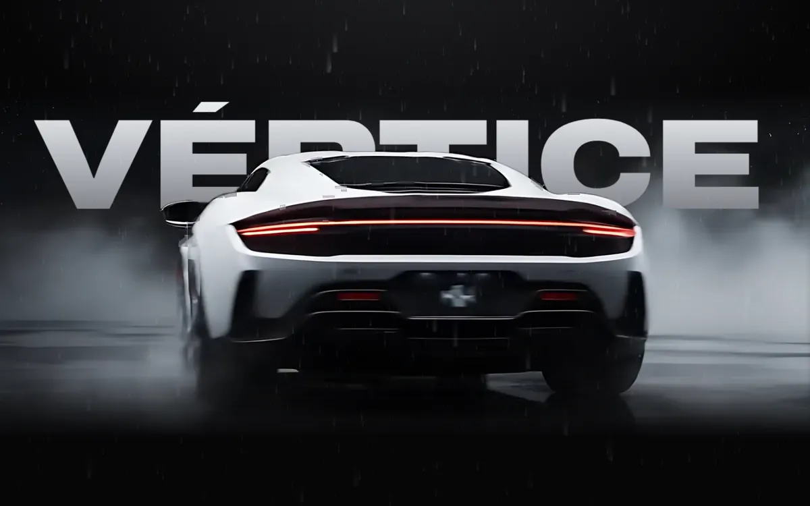
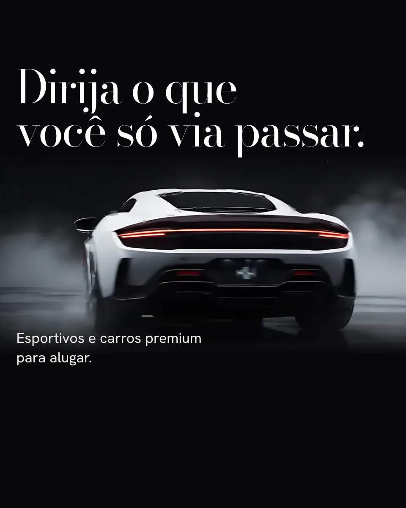
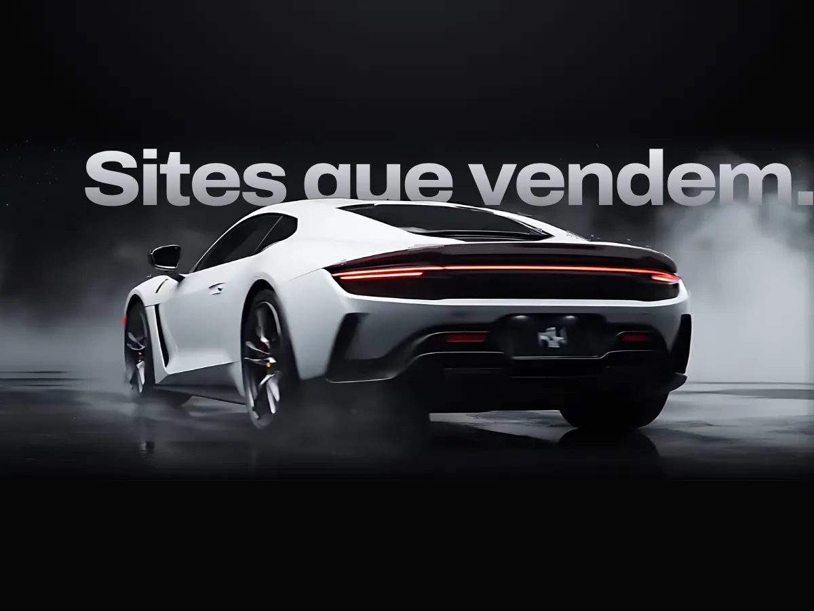
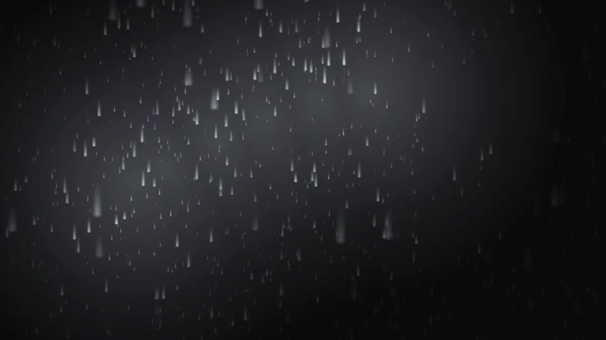
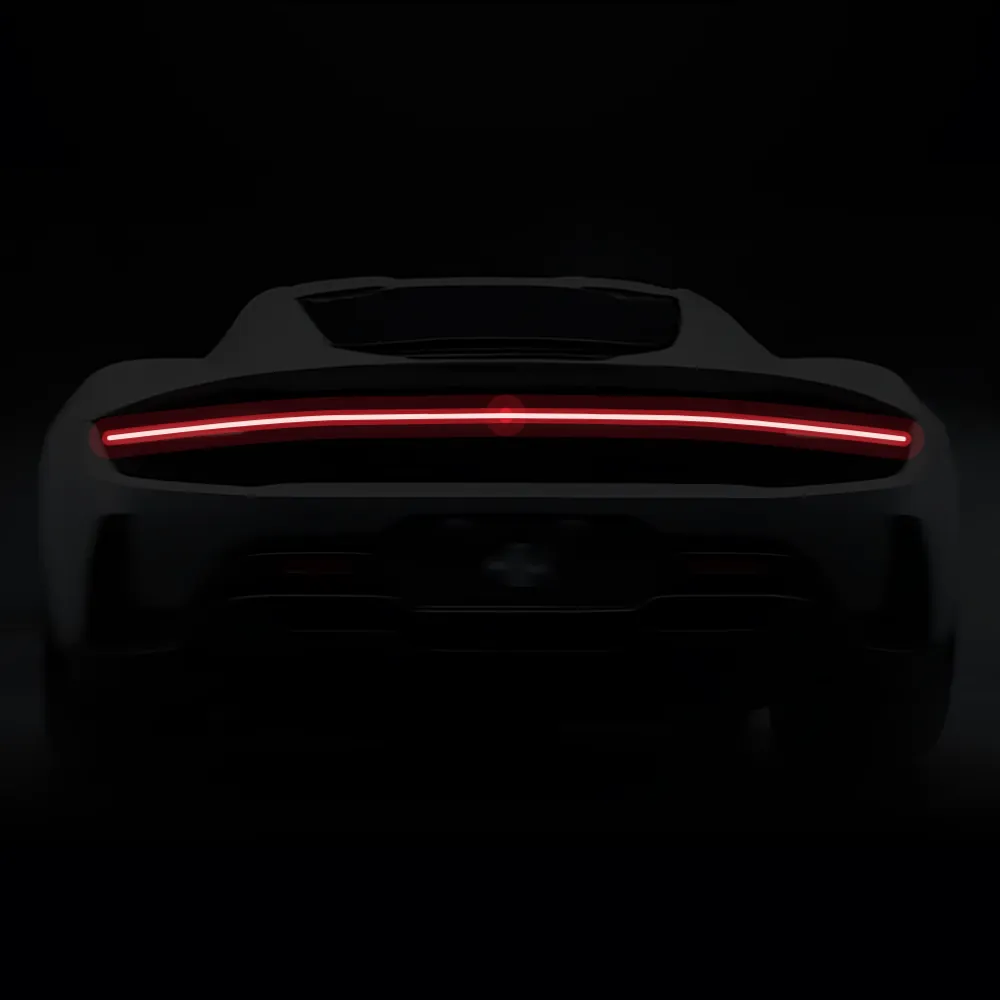
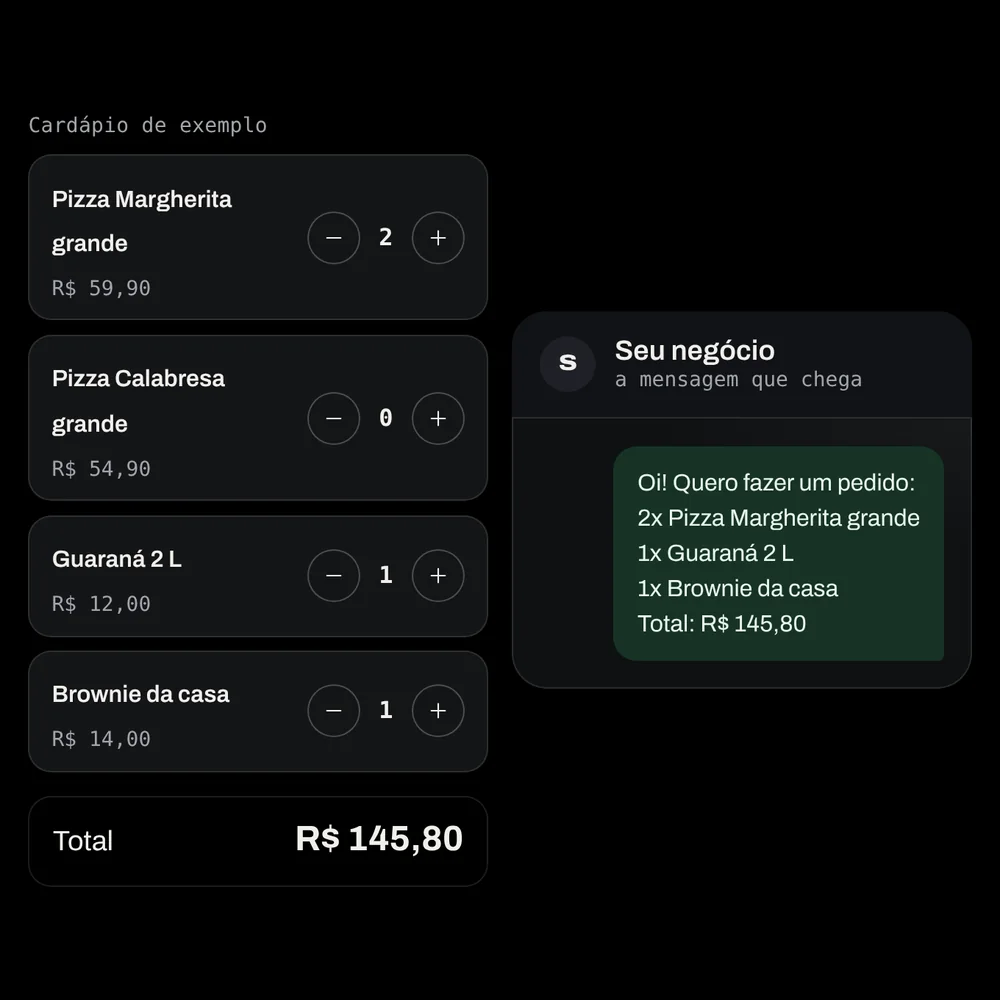
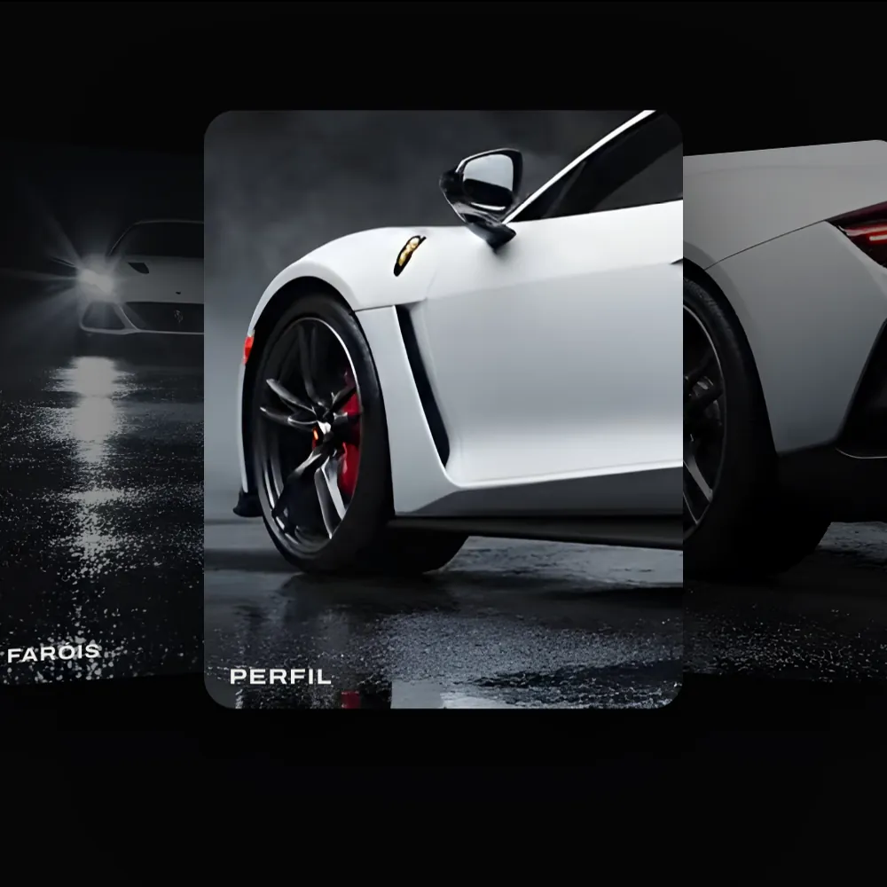

Site conceitoLocadora premium. O carro gira com a rolagem e o texto passa por trás dele.
Sites conceito e experimentos que mostram como a GuDev pensa um site: rápido no celular, cheio de detalhe e sempre levando pro WhatsApp.
Todos os projetos aqui são conceitos da GuDev. Os sites de clientes entram nesta página com a autorização deles.

Site conceitoLocadora premium. O carro gira com a rolagem e o texto passa por trás dele.

A mesma marca, focada em reservar em poucos toques.

LaboratórioQuadro a quadro, o carro fica na frente das letras.

A chuva só aparece onde a luz bate. A luz segue o seu dedo.

LaboratórioUma abertura de um segundo, desenhada em cima do carro.

LaboratórioO cliente escolhe e a mensagem se escreve sozinha.

LaboratórioDetalhes em cartões que dá vontade de arrastar.
A prévia é grátis e fica pronta em até 24h, com os seus dados reais.